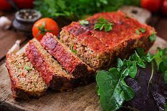

Meatloaf

Description
Meatloaf is an American institution. In addition to being easy to prepare, EVERYBODY loves it.
Ingredients
- 2 pounds lean ground beef
- 1 (10.75 ounce) can condensed tomatoe soup
- 1 onion, finely diced
- tablespoon steak sauce
- 2 cup ketchup
- 3 tablespoons prepared mustard
- cup rolled oats
- eggs, beaten
Steps
- Preheat the oven to 350 degrees F (175 degrees C).
- Combine ground beef, soup, chopped onion, rolled oats, eggs, steak sauce, ketchup, and mustard in a large bowl. Mix well.
- Shape into a loaf, and pat into a loaf pan.
- Bake in the preheated oven unti no longer pink in the center, about 1 hour.